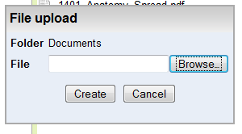
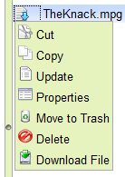
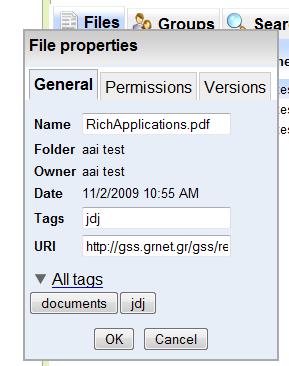
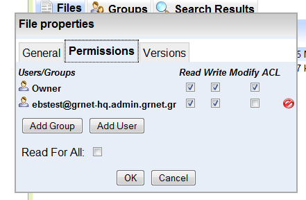
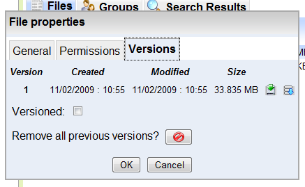
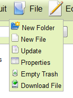

Επιλογή Upload από το μενού File

Επιλογή Upload από το context menu (right click) του καταλόγου
Νέο αρχείο μπορεί να δημιουργηθεί (και αποθηκευτεί) ως εξής:
1. Επιλογή του καταλόγου που θα αποθηκευτεί το αρχείο. Χωρίς καμμία ενέργεια επιλογής το αρχείο θα αποθηκευτεί στο ήδη επιλεγμένο κατάλογο (αρχικά επιλεγμένος είναι ο κατάλογος χρήστη)
2. Επιλογή ενέργειας "Upload" είτε από το μενού "File", είτε από το context menu που εμφανίζεται
με right mouse click πάνω στον κατάλογο, όπως φαίνεται στις παρακάτω είκόνες:
|
Επιλογή Upload από το μενού File |
Επιλογή Upload από το context menu (right click) του καταλόγου |
3. Το σύστημα εμφανίζει διάλογο για την επιλογή του αρχείου από τους τοπικούς καταλόγους
του υπολογιστή του χρήστη (όπως φαίνεται στο σχήμα).
|

Διάλογος για την επιλογή και αποστολή (δημιουργία) αρχείου |
4. Ο χρήστης επιλέγει το τοπικό αρχείο και κάνει click στην επιλογή "Upload", οπότε και αρχίζει
η αποστολή του αρχείου στον server και ο διάλογος παρουσιάζει σχετικό progress bar, όπως φαίνεται
στο σχήμα. Αν ο χρήστης επιλέξει "Cancel", η μεταφορά διακόπτεται χωρίς να δημιουργηθεί αρχείο
στον επιλεγμένο κατάλογο.

Διάλογος πορείας αποστολής (δημιουργίας) αρχείου |
5. Με την επιτυχή ολοκλήρωση της παραπάνω διαδικασίας, ο διάλογος κλείνει και η όψη φακέλου ενημερώνεται με το νέο αρχείο.
Ο χρήστης έχει πρόσβαση στα στοιχεία (μετα-δεδομένα) του επιλεγμένου αρχείου μέσω της επιλογής "Properties"
του μενού "File" ή του file context menu (right mouse click στο αρχείο), όπως φαίνεται στις παρακάτω εικόνες:
|
Μενού File |

File context menu (right click) του αρχείου |
Η επιλογή "Properties" εμφανίζει διάλογο με τρια tabs για τα μετα-δεδομένα του επιλεγμένου
αρχείου, όπως δείχνουν οι παρακάτω εικόνες. Το πρώτο tab (τίτλος "General") εμφανίζει τα
γενικά στοιχεία του αρχείου, όπως: όνομα, κατάλογος, ιδιοκτήτης, ημερομηνία & ώρα δημιουργίας,
tags.
Μέσω αυτού του tab μπορεί να αλλάξει το όνομα του αρχείου και/ή να τροποποιηθούν τα tags που του έχουν
ανατεθεί. Το δεύτερο tab (τίτλος "Sharing") εμφανίζει και επιτρέπει τη διαχείριση των δικαιωμάτων
πρόσβασης στο αρχείο, και το URI μέσω του οποίου είναι διαθέσιμο το αρχείο αν έχει ενεργοποιηθεί το
public access. Επεξηγείται με λεπτομέρειες εδώ. Το τρίτο
tab (τίτλος "Versions") εμφανίζει πληροφορίες για τις διαφορετικές εκδόσεις του επιλεγμένου αρχείου
και επιτρέπει τη διαχείρισή τους. Καταρχήν από το tab αυτό και μέσω του checkbox "Versioned" ο χρήστης
ορίζει αν το σύστημα θα διατηρεί εκδόσεις του αρχείου σε κάθε ενημέρωσή του. Επίσης εμφανίζεται λίστα
με τις διαθέσιμες εκδόσεις και ο χρήστης μπορεί να διαγράψει μια έκδοση ή να την επαναφέρει σε ισχύ.
Τέλος, η επιλογή "Remove all previous versions?" διαγράφει όλες τις εκδόσεις εκτός από την τελευταία
ανεξαρτήτως από τον αν έχει ενεργοποιηθεί ή όχι η επιλογή εκδόσεων.
Υπενθυμίζεται ότι οι διαφορετικές εκδόσεις που αποθηκεύονται συνεισφέρουν στο υπολογισμό χρησιμοποιούμενου
χώρου από τον χρήστη.
|

Γενικά στοιχεία αρχείου |

Στοιχεία δικαιωμάτων πρόσβασης αρχείου |

Στοιχεία διαχείρισης εκδόσεων αρχείου |
Η ενημέρωση του αρχείου, δηλαδή η αποθήκευση νέας έκδοσης του αρχείου, μπορεί να γίνει είτε από το μενού "File" είτε
από το file context menu, με την επιλογή "Upload".
|

Μενού File |
File context menu |